Getting started with OpenACC and Nvidia Nsight
OpenACC is a user-driven directive-based performance-portable parallel programming model. From the OpenACC homepage.
In many ways OpenACC is similar to OpenMP, but with a focus on running the code
on accelerators (such as GPUs). OpenACC defines a set of directives (for both
C/C++ and Fortran) that can be included in existing code to transition the
runtime to accelerators.
Accelerators, like the Nvidia GPUs on Saga, are great for numerical calculations
and applications that work on the “SIMD” - Single Instruction
Multiple Data principle, (where one or more operations are applied to a
large number of datapoints independently of each other). Examples include
operations like
gemm
which can be 6 times faster than on the
CPU,
or generating random numbers which can be 70 times
faster!
Note
If you know some OpenACC or want to see tips for larger applications take a look at the tip section at the bottom.
Note
We have also included a Fortran example at the end of this document.
Tip
For a summary of available directives we have used this reference guide.
Introduction
This guide will introduce the concept of OpenACC directives in C/C++ code, how
to compile and run such programs on Saga and how to
use Nvidia Nsight to profile and
optimize code.
After reading this guide you should:
Know what OpenACC is
Know how to compile
C/C++OpenACC programs on SagaKnow how to run OpenACC programs on GPUs on Saga
Know how to run OpenACC programs with a profiler (
nsys) on SagaKnow how to understand the basic Nsight user interface
Know how to optimize OpenACC programs based on profiler results
OpenACC
To begin we will need an example program that does some calculations that we would like to speed up.
We have selected an example based on heat dissipation utilizing Jacobi
iterations. The initial source can be found in jacobi_serial.c, shown below:
/**
* Serial implementation of the Jacobi iteration
*/
#include <math.h>
#include <stdio.h>
#include <stdlib.h>
// Number of rows and columns in our matrix
static const int NUM_ELEMENTS = 2000;
// Maximum number of iterations before quiting
static const int MAX_ITER = 10000;
// Error tolerance for iteration
static const float MAX_ERROR = 0.01;
// Seed for random number generator
static const int SEED = 12345;
int main (int argc, char** argv) {
// Initialize random number generator
srand (SEED);
// Create array to calculate on
float array[NUM_ELEMENTS][NUM_ELEMENTS];
// Fill array with data
for (int i = 0; i < NUM_ELEMENTS; i++) {
for (int j = 0; j < NUM_ELEMENTS; j++) {
// The following will create random values between [0, 1]
array[i][j] = (float) rand () / (float) RAND_MAX;
}
}
// Before starting calculation we will define a few helper variables
float arr_new[NUM_ELEMENTS][NUM_ELEMENTS];
float error = __FLT_MAX__;
int iterations = 0;
// Perform Jacobi iterations until we either have low enough error or too
// many iterations
while (error > MAX_ERROR && iterations < MAX_ITER) {
error = 0.;
// For each element take the average of the surrounding elements
for (int i = 1; i < NUM_ELEMENTS - 1; i++) {
for (int j = 1; j < NUM_ELEMENTS - 1; j++) {
arr_new[i][j] = 0.25 * (array[i][j + 1] +
array[i][j - 1] +
array[i - 1][j] +
array[i + 1][j]);
error = fmaxf (error, fabsf (arr_new[i][j] - array[i][j]));
}
}
// Transfer new array to old
for (int i = 1; i < NUM_ELEMENTS - 1; i++) {
for (int j = 1; j < NUM_ELEMENTS - 1; j++) {
array[i][j] = arr_new[i][j];
}
}
iterations += 1;
}
return EXIT_SUCCESS;
}
Compiling and running on Saga
To compile this initial version on Saga we will need to load the Nvidia HPC SDK. This can be done with the following
command:
$ module load NVHPC/20.7
Note
You can check if a newer version of NVHPC is available by issuing the command
module avail NVHPC
Then to compile or serial version we will invoke the nvc compiler with the
following command:
$ nvc -g -fast -o jacobi jacobi_serial.c
We can run this program on a compute node by issuing the following:
# Run on compute node with 512MB of memory for a maximum of 2 minutes
$ srun --account=<your project number> --time=02:00 --mem-per-cpu=512M time ./jacobi
# The first number outputted should be the number of seconds it took to run the
# program:
# 40.79user 0.01system 0:40.91elapsed 99%CPU (0avgtext+0avgdata 35212maxresident)k
# 5144inputs+0outputs (18major+1174minor)pagefaults 0swaps
Initial transition
To begin transitioning the code to run on a GPU we will insert the kernels
directive into the code. The kernels directive tells OpenACC that we would
like everything inside the directive to be run on the GPU, but it is up to the
compiler to decide how to best do this.
It is always a good idea to begin with the kernels directive as that is the
easiest and it gives the compiler a lot of flexibility when translating the
code. kernels is also a good way to understand if the compiler is not able to
optimize something and if we need to rewrite some code to better run on the GPU.
The code is available in jacobi_kernels.c and the changes applied are shown
below.
while (error > MAX_ERROR && iterations < MAX_ITER) {
error = 0.;
#pragma acc kernels
{
// For each element take the average of the surrounding elements
for (int i = 1; i < NUM_ELEMENTS - 1; i++) {
for (int j = 1; j < NUM_ELEMENTS - 1; j++) {
arr_new[i][j] = 0.25 * (array[i][j + 1] +
array[i][j - 1] +
array[i - 1][j] +
array[i + 1][j]);
error = fmaxf (error, fabsf (arr_new[i][j] - array[i][j]));
}
}
// Transfer new array to old
for (int i = 1; i < NUM_ELEMENTS - 1; i++) {
for (int j = 1; j < NUM_ELEMENTS - 1; j++) {
array[i][j] = arr_new[i][j];
}
}
}
iterations += 1;
}
As can be seen in the code above we have added the kernels directive around
the main computation that we would like to accelerate.
To compile the above we need to tell nvc that we would like to accelerate it
on GPUs. This can be done with the -acc flag. We will also add the
-Minfo=accel flag which informs the compiler that we would like it to inform
us of what it is doing with accelerated regions. The full command is as follows.
$ nvc -g -fast -acc -Minfo=accel -o jacobi jacobi_kernels.c
When running this command pay special attention to the information it is telling us about the accelerated region.
main:
40, Generating implicit copyin(array[:][:]) [if not already present]
Generating implicit copyout(array[1:1998][1:1998]) [if not already present]
Generating implicit copy(error) [if not already present]
Generating implicit copyout(arr_new[1:1998][1:1998]) [if not already present]
42, Loop is parallelizable
43, Loop is parallelizable
Generating Tesla code
42, #pragma acc loop gang, vector(4) /* blockIdx.y threadIdx.y */
Generating implicit reduction(max:error)
43, #pragma acc loop gang, vector(32) /* blockIdx.x threadIdx.x */
52, Loop is parallelizable
53, Loop is parallelizable
Generating Tesla code
52, #pragma acc loop gang, vector(4) /* blockIdx.y threadIdx.y */
53, #pragma acc loop gang, vector(32) /* blockIdx.x threadIdx.x */
In the above output the numbers corresponds to line numbers in our
jacobi_kernels.c source file and the comments show what nvc intends to do
with each line.
Before we start profiling to see what we can optimize, lets run the program to
learn the additional Slurm parameters needed for running with GPU on Saga. The
following is the new command needed (notice the added --partition=accel and
--gpus=1 flags)
$ srun --account=<your project number> --time=02:00 --mem-per-cpu=512M --partition=accel --gpus=1 time ./jacobi
--partition=accel is needed to tell Slurm to only run on nodes on Saga with
GPUs and the --gpus=N line tells Slurm that we would like to have access
to N GPUs (accel nodes on Saga have 4 separate GPUs, above we are asking
for only one GPU).
Profiling
To profile the kernels version of our program we will here transition to
Job Scripts. This will make it a bit easier to
make changes to how the program is run and also makes it a bit more
reproducible.
The Slurm script is available as kernels.job and is show below.
#!/bin/sh
#SBATCH --account=<your project number>
#SBATCH --job-name=openacc_guide_kernels
#SBATCH --time=05:00
#SBATCH --mem-per-cpu=512M
#SBATCH --partition=accel
#SBATCH --gpus=1
set -o errexit # Exit the script on any error
set -o nounset # Treat any unset variables as an error
module --quiet reset # Reset the modules to the system default
module load NVHPC/20.7 # Load Nvidia HPC SDK with profiler
module list # List modules for easier debugging
# Run the program through the Nsight command line profiler 'nsys'
# The '-t' flag tells the profiler which aspects it should profile, e.g. CUDA
# and OpenACC code
# The '-f' flag tells the profiler that it can override existing output files
# The '-o' flag tells the profiler the name we would like for the output file
nsys profile -t cuda,openacc -f true -o kernels ./jacobi
Run this script by issuing
$ sbatch kernels.job
The end result should be a file called kernels.qdrep which contains the
profiling information. Download this file to your local computer to continue
with this guide.
Nsight
We will continue this guide kernels.qdrep as the profiling result to view.
Note
To view images in a larger format, right click and select View Image
To begin, start Nsight Systems on your own machine, giving the following view.
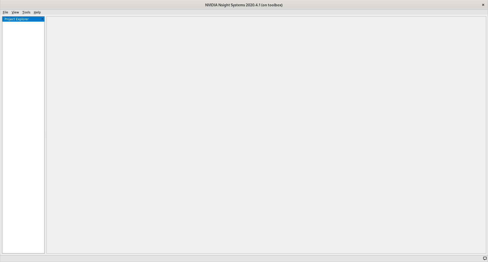
To open our profiling result click File, then Open and navigate to the
folder where you stored kernels.qdrep. Loading this file should give you the
following view.
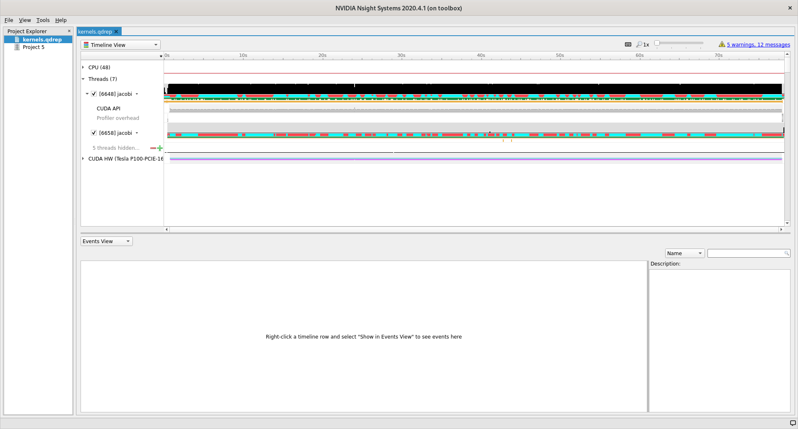
User interface
The user interface of Nsight is comprised of three main areas and two drop down menus that control what is shown in the different areas.
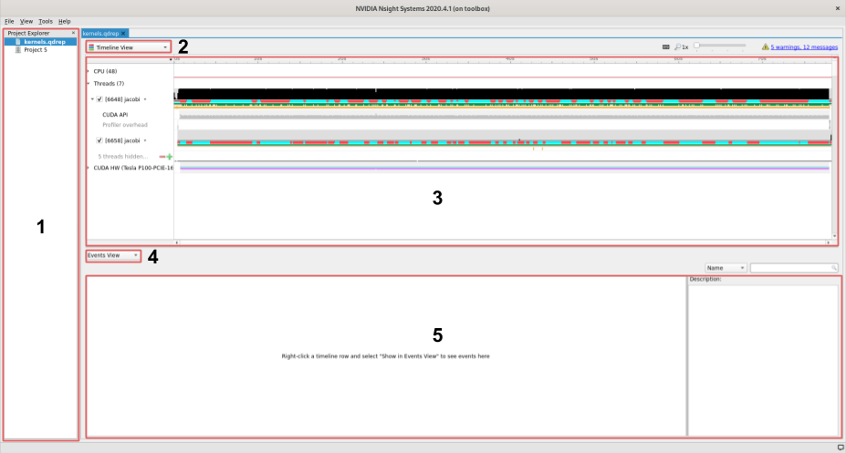
On the left we find the project area, this list shows your project and profiles that you have loaded.
The left topmost dropdown menu selects which view to show
In the middle of the user interface we find the main view, currently showing the timeline of our profile. This view changes depending on the choice made in the dropdown menu marked with a
2.The second dropdown, in the middle of the screen, selects different views for the bottommost area.
The area at the bottom shows additional information about the profile together with the timeline view.
Views
Using the topmost dropdown menu, marked with 2 in the picture above, we can
select different views for the current profile.
When first opening a new profile it can be informative to start with the
Diagnostics Summary. This view shows a summary of the profile and can give
great hints about what went wrong if the profile is not as expected.
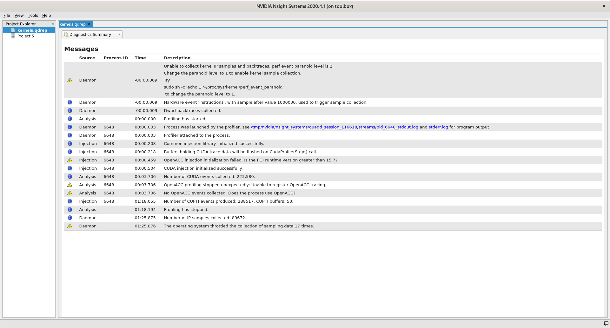
After that the Analysis Summary give an overview of the profile. This view
contains a lot of information which can be nice to review to ensure that the
profile was configured correctly. Instances of good places to review are the
CLI command used which shows how the profile was generated, GPU info which
shows the accelerator in use and the Analysis options which show how nsys
interpreted the command line arguments.
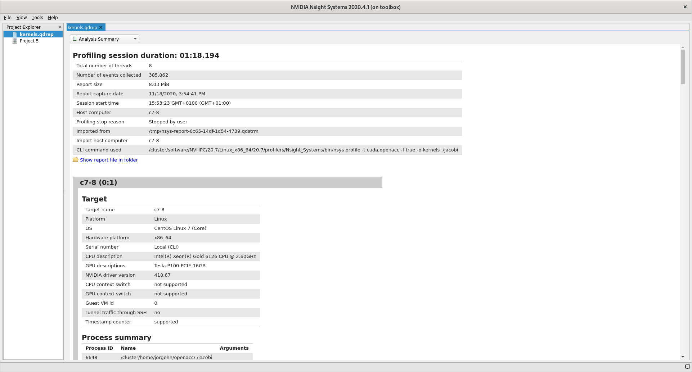
The last view that we will detail here (because the two remaining are not that
informative for understanding the profile information) is the Timeline View,
which is the default view that we saw when we opened Nsight.
A good place to start with this view is the second dropdown, marked with 4. In
this dropdown we can select additional information to display about our profile
results. By selecting one of the different ... View options the profiler can
show us which functions used what amount of the runtime in different ways. In
the image below we have selected Bottom-Up View which sorts functions by
placing the most time consuming ones at the top.
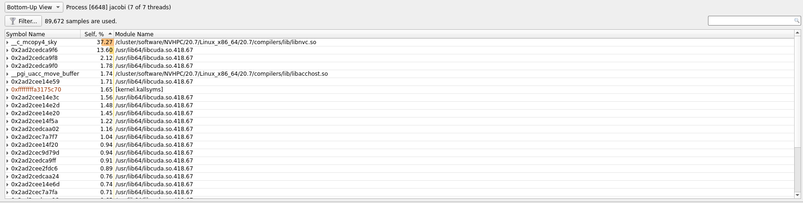
In the timeline main view, we can see the usage of different APIs and the amount
of CPU and GPU usage. A quick first thing to do is to click the arrow next to
our GPU name so that it shows the percentage of Kernels usage and the
percentage of Memory usage. In our current profile we can see that we are only
using about 6% of the Kernels resource which means that our GPU is spending
only 6% of its time actually doing useful compute.
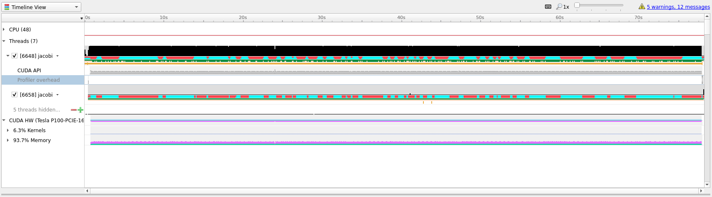
To better understand what we are seeing in the timeline it is useful to zoom
into specific areas to see what is going on. Use the mouse cursor to select a
small column of the timeline area, right click and select Zoom into selection.
Depending on how long the profile ran for it can be necessary doing this several
times. Below we have tried to illustrate how far we would usually zoom in.
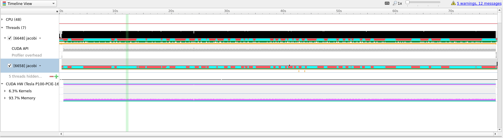 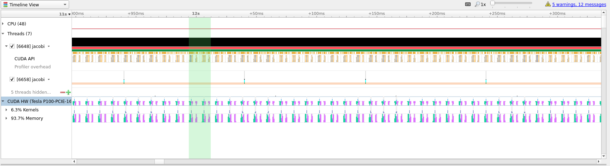 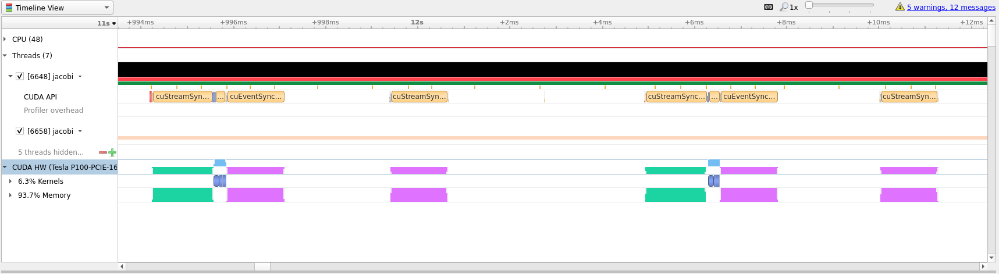
In the last picture above we have zoomed in on what appears to be a cycle of two
kernel launches. Remembering our code, that is most likely two iterations of the
while loop where we placed our kernels directive inside.
Profile Guided Optimization
Even though we have translated our program to run on the GPU it has not yet
given us the results that we were after. Running on GPU resulted in a
computation that is about 1.5 times slower than just running on CPU, but we
can do better.
Looking at the zoomed in view of the timeline, in the image below, we can see that most of the time is taken up with transferring data between the CPU and the GPU.
Optimizing data transfer is a crucial part of translating code to the GPU and accounts for most of the time spent optimizing a program for the GPU.
Looking at our while loop we can see that we are only interested in the final
result after the loop exits which means that we should try to keep the data on
the GPU and only transfer in and out at the beginning and end of the loop. To do
this we will introduce the #pragma acc data clause which tells the compiler
that we only want to do data movement for a given scope. The changes needed
center around the while loop shown below.
#pragma acc data copy(array, arr_new)
while (error > MAX_ERROR && iterations < MAX_ITER) {
error = 0.;
#pragma acc kernels
{
// For each element take the average of the surrounding elements
for (int i = 1; i < NUM_ELEMENTS - 1; i++) {
for (int j = 1; j < NUM_ELEMENTS - 1; j++) {
arr_new[i][j] = 0.25 * (array[i][j + 1] +
array[i][j - 1] +
array[i - 1][j] +
array[i + 1][j]);
error = fmaxf (error, fabsf (arr_new[i][j] - array[i][j]));
}
}
// Transfer new array to old
for (int i = 1; i < NUM_ELEMENTS - 1; i++) {
for (int j = 1; j < NUM_ELEMENTS - 1; j++) {
array[i][j] = arr_new[i][j];
}
}
}
iterations += 1;
}
Let us compile this on Saga and see if this results in better performance. Compile and run with the following commands.
# Remember 'module load NVHPC/20.7' when logging in and out
$ nvc -g -fast -acc -Minfo=accel -o jacobi jacobi_data.c
$ sbatch kernels.job
Below we have included the timeline view of the updated profile.
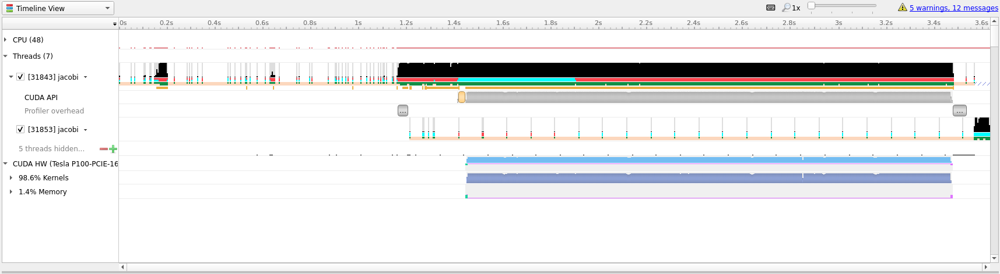
Although this doesn’t look all that different from the previous profiles, notice
that the timeline only goes to about 3.6 seconds, the previous profile went to
above 70 seconds. Almost a 20x speedup! Compared to our runs on the CPU this
translation to the GPU has given us about a 10x speedup. This shows the
importance of data movement and is a good illustration of the optimization
process, initially the code ran much slower on the GPU than on the CPU before
becoming better than the CPU.
Doing better than this will be difficult, however, to introduce a few more concept that can be nice - we will perform a few more iterations on the code. However, do not expect great improvements.
The first improvement that we can do is to realize that arr_new will never be
needed and is simply a scratch array for our computation, we can thus change our
data directive to #pragma acc data copy(array) create(arr_new). This tells the
compiler that it should copy array from the CPU to the GPU when entering the
loop and copy the data back from the GPU to CPU when exiting the scope. The
create(arr_new) tells the compiler to only create the data on the GPU, it will
not copy anything in or out, which is ok for us since we will overwrite it on
first loop anyway and never use it after the loop.
The above optimization will net us very little so lets do some more. Instead of
using the kernels directive we can take more control of the translation and
tell the compiler that we would like to parallelize both loops. This is done
with the #pragma acc parallel loop directive. Since we also want to do a
reduction across all loops we can also add a reduction by writing #pragma acc parallel loop reduction(max:error) to the first loop. Lastly, we will apply the
collapse(n) clause to both loop directives so that the compiler can combine
the two loops into one large one, with the effect of exposing more parallelism
for the GPU. The new code is show below.
#pragma acc data copy(array) create(arr_new)
while (error > MAX_ERROR && iterations < MAX_ITER) {
error = 0.;
#pragma acc parallel loop reduction(max:error) collapse(2)
for (int i = 1; i < NUM_ELEMENTS - 1; i++) {
for (int j = 1; j < NUM_ELEMENTS - 1; j++) {
arr_new[i][j] = 0.25 * (array[i][j + 1] +
array[i][j - 1] +
array[i - 1][j] +
array[i + 1][j]);
error = fmaxf (error, fabsf (arr_new[i][j] - array[i][j]));
}
}
#pragma acc parallel loop collapse(2)
for (int i = 1; i < NUM_ELEMENTS - 1; i++) {
for (int j = 1; j < NUM_ELEMENTS - 1; j++) {
array[i][j] = arr_new[i][j];
}
}
iterations += 1;
}
Looking at the generated profile, optimized.qdrep shown below, we can see that
we managed to eek out slightly more performance, but not that much.
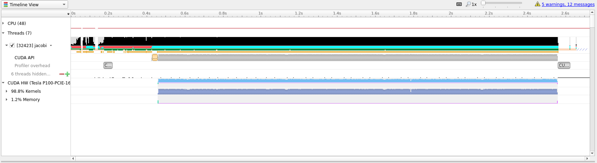
Compared to the initial translation we can see now that the ratio of Kernels
to Memory on the GPU is much better, 98% spent actually doing useful
compute.
If we zoom in, as in the image below, we can see that there is not much wasted
time between useful compute. Going further with OpenACC is most likely not that
useful and getting this to run even quicker will likely require a rewrite to
CUDA which is outside the scope and intention of this guide.
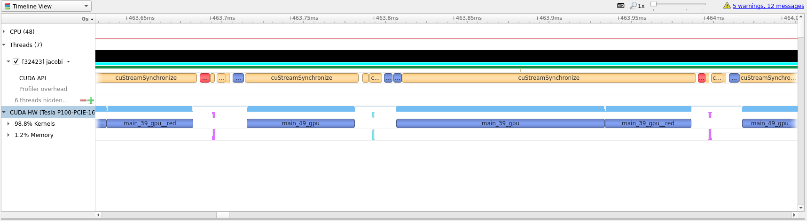
One way to see how well we have optimized the code is to look at the white space
between compute regions. In our initial translation these white spaces lasted
for around 4 milliseconds. In the optimized profile the whitespace between
kernels amount to around 32 microseconds.
Summary
In this guide we have shown how to use OpenACC to transition a simple C
example from running on the CPU to running the main calculations on GPU. We have
detailed how such code can be used, compiled and run on Saga. And, we have
introduced Nsight and how it can be used to profile and guide OpenACC
transitions.
Tips
Do not expect miracles! Translating a large code base to run on GPU is a large undertaking and should not be taken lightly. Just getting a large code base to run on GPU and having almost the same performance as the CPU code is extremely good! Optimizing for GPUs require time and patience.
Always start with the
kernelsdirective and study the compiler output. This should guide your next steps. The information outputted by the compile will usually tell you if the scope of the directive can be run effectively on GPU and if you should take some steps to rewrite parts of the code.Compiler output like
Loop carried dependence of <name> prevents parallelizationandLoop carried backward dependence of <name> prevents vectorizationare clear indications that the compiler is not able to automatically translate the code and a rewrite might be necessary.Data movement is paramount. If you know some data is only needed to read from use
copyin,copyoutif it is only written to,presentcan be nice if you know the data should already be present on the GPU andcopyensures that the program functions as expected. OpenACC has several directive that can be used to perform data management and some are even scoped for the entire program.Be structured in your approach. Only translate one scope at a time. This ensures that you can focus on a small area and get less compiler output to study. Profiling between each round may not be necessary, but it can be valuable to know what is happening.
Fortran
As mentioned in the beginning of this document, OpenACC also supports Fortran.
Directives in Fortran can be added in a similar fashion to OpenMP directives,
with !$acc instead of !$OMP. Below is an example of matrix multiplication
with the !$acc kernels directive.
program mxm
integer, parameter :: r8 = selected_real_kind(p=15,r=307)
parameter(N=4000)
real(r8) a(N,N), b(N,N) , c(N,N), temp
integer i, j, l, c1, c2
call random_number(a)
call random_number(b)
call system_clock(count=c1)
!$acc kernels
do j = 1,N
do l = 1,N
do i = 1,N
c(i,j) = c(i,j) + a(i,l)*b(l,j)
enddo
enddo
enddo
!$acc end kernels
call system_clock(count=c2)
write(*,*) "Calc time : ",(c2-c1)/1e6," secs"
write(*,*) c(1,1), c(N,N), sum(c)
end program mxm
On Saga, load the NVHPC/20.7 module and compile with nvfortran as follows:
$ module load NVHPC/20.7
$ nvfortran -o mxm -fast -acc -gpu=cc60 -Minfo=accel mxm.f90
To run the program on Saga with GPUs use:
$ srun --account=<your project number> --time=02:00 --mem-per-cpu=512M --partition=accel --gpus=1 ./mxm
This program is as close to the best case scenario possible for accelerators
and, on Saga, gives a speedup of 24x compared to a single CPU core.
Flags |
Run time |
Speedup |
|---|---|---|
|
48.9 seconds |
1 x |
|
2.0 seconds |
24 x |
You can profile Fortran programs in the same way you would for C/C++, using
nsys profile and the flag -t cuda,openacc.